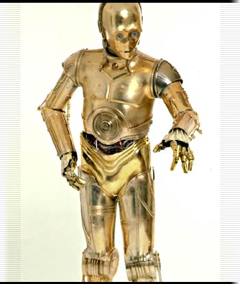

星球大战・C-3PO
浑身闪烁着金光的社交礼仪用智能机器人C-3PO和同类一样恶劣：口无遮拦，大惊小怪，神经兮兮。但这毕竟没有影响他的工作性能，所以大多数人也就忍受了他的这种个性。
和其他3PO系列智能机器人不同，崔庇奥不是由银河机器人制造中心（Cybot Galactica）生产，而是由年轻的天行者阿纳金（Anakin Skywalker）在塔图茵用旧零件拼装组合而成，目的是为了给男孩的母亲诗米（Shmi）打下手。崔庇奥的性能和安全性都还算是能达到合格标准，因此才能为几代主人提供自己力所能及的帮助。
魁刚金（Qui-Gon Jinn）赎得阿纳金的自由后，崔庇奥随着诗米一起去了拉斯（Lars）的农场。后来阿纳金返回塔图茵，崔庇奥被帕蒂莫・阿米黛��接收，由此开始了和R2 -D2的恶缘。稍后几年，阿图和崔庇奥在为莉亚・奥珈娜执行任务时，再次由于机缘巧合回到了拉斯的农场。这回，他们成了天行者卢克的财产，但崔庇奥更多时候还是在帮助莉亚公主解决外交事务。
C-3PO
直立式社交礼仪用智能机械人（Walking Protocol Droid）
社交家（Diplomat）3级
先攻权加值：+0
防护等级：11（等级+1）
速度：8米
体力/生命：0/13
攻击：+1（近战，1d4，空手）或者+1（远程）
特殊属性：智能机器人人格（恭顺[Faithful]）
豁免：坚韧+2，反射+1，意志+3
体形：重型
原力点：0
黑暗原力点：0
声望：+1
属性：力量10，敏捷10，体质13，智力18，感知10，魅力10
挑战等级：A
随身装备：翻译套件（Translator Unit）（DC 5），录音机（Recording Unit[Audio]），发声套件（Vocabulator）
技能：使用电脑+8，交涉+9，知识（奥德朗[Alderaan]）+11，知识（异形）+8，知识（行政规章[Bureaucracy]）+8，聆听+5，听说基本语，听说数码语，侦察+5
未使用技能点：6
专长：双巧手，技能专攻（交涉），技能专攻（知识[奥德朗]），信誉良好，擅长武器（简单武器）